#..........................load packages.........................
library(tidyverse)
library(chron)
library(naniar)
#..........................import data...........................
mko <- read_csv("https://portal.edirepository.org/nis/dataviewer?packageid=knb-lter-sbc.2007.17&entityid=02629ecc08a536972dec021f662428aa")
#..........................wrangle data..........................
mko_clean <- mko |>
# keep only necessary columns ----
select(year, month, day, decimal_time, Temp_bot, Temp_top, Temp_mid) |>
# create datetime column (not totally necessary for our plots, but it can be helpful to know how to do this!) ----
unite(date, year, month, day, sep = "-", remove = FALSE) |>
mutate(time = chron::times(decimal_time)) |>
unite(date_time, date, time, sep = " ") |>
# coerce data types (see https://www.neonscience.org/resources/learning-hub/tutorials/dc-convert-date-time-posix-r for overview of POSIXct vs POSIXlt) ----
mutate(date_time = as.POSIXct(date_time, "%Y-%m-%d %H:%M:%S", tz = "GMT"),
year = as.factor(year),
month = as.factor(month),
day = as.numeric(day)) |>
# add month name by indexing the built-in `month.name` vector ----
mutate(month_name = as.factor(month.name[month])) |>
# replace 9999s with NAs ----
naniar::replace_with_na(replace = list(Temp_bot = 9999,
Temp_top = 9999,
Temp_mid = 9999)) |>
# select/reorder desired columns ----
select(date_time, year, month, day, month_name, Temp_bot, Temp_mid, Temp_top)
#......................explore missing data......................
# counts and percentage of missing data by year ----
see_NAs <- mko_clean |>
group_by(year) |>
naniar::miss_var_summary() |>
filter(variable == "Temp_bot")
# visualize missing Temp_bot ----
bottom <- mko_clean |> select(Temp_bot)
missing_temps <- naniar::vis_miss(bottom)
Note
This template follows lecture 2.2 slides.
Setup
Histograms
- represent distribution of a numeric variable(s), which is cut into several bins – height of bar represents # of observations in that bin
Too many groups
Note the message, to remind us to consider adjusting our binwidth
# histogram with all 12 months ----
mko_clean |>
mutate(month_name = factor(month_name, levels = month.name)) |>
ggplot(aes(x = Temp_bot, fill = month_name)) +
geom_histogram(position = "identity", alpha = 0.5)`stat_bin()` using `bins = 30`. Pick better value with `binwidth`.Warning: Removed 74425 rows containing non-finite outside the scale range
(`stat_bin()`).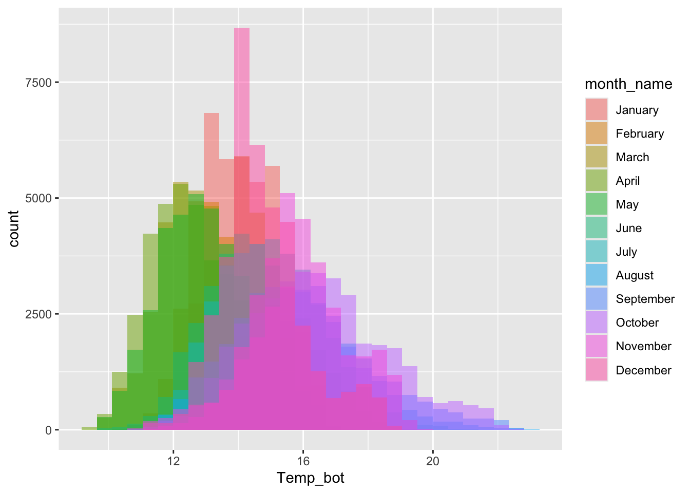
Alt 1: small multiples
Alt 2: fewer groups + update colors + modify bin widths
# histogram with fewer months ----
mko_clean |>
mutate(month_name = factor(month_name, levels = month.name)) |>
filter(month_name %in% c("April", "June", "October")) |>
ggplot(aes(x = Temp_bot, fill = month_name)) +
geom_histogram(position = "identity", alpha = 0.5, color = "black", binwidth = 1) +
scale_fill_manual(values = c("#2C5374", "#ADD8E6", "#8B3A3A"))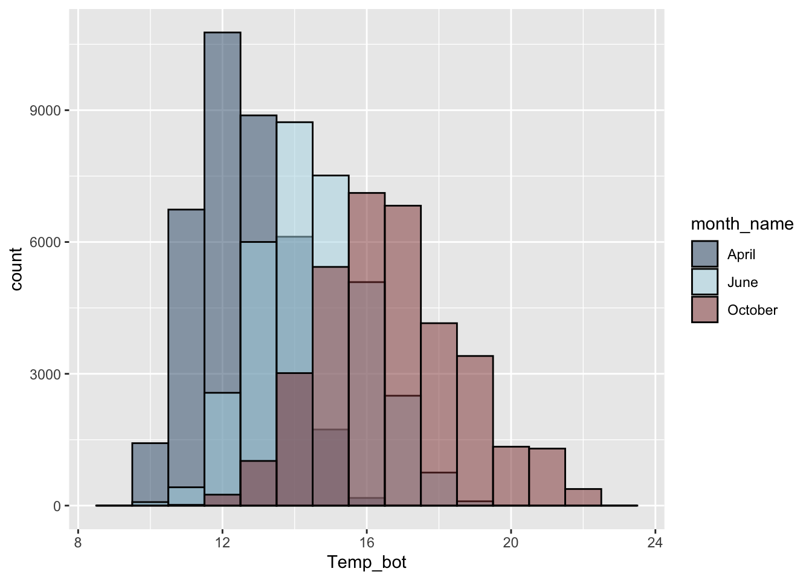
Density plots
- represent data distribution of a numeric variable(s); uses KDE to show probability density function of the variable; where the area under the curve is equal to 1
Too many groups
Alt 1: small multiples
Alt 2: fewer groups + update colors + modify band widths
A few more histograms & density plots
Distinction: histograms vs. density plots
# create some dummy data ----
dummy_data <- data.frame(value = c(rnorm(n = 100, mean = 5),
rnorm(n = 200, mean = 10)),
group = rep(c("A", "B"),
times = c(100, 200)))
# histogram ----
ggplot(dummy_data, aes(x = value, fill = group)) +
geom_histogram(position = "identity", alpha = 0.7) +
geom_rug(aes(color = group), alpha = 0.75)
# density plot ----
ggplot(dummy_data, aes(x = value, fill = group)) +
geom_density(alpha = 0.7) +
geom_rug(aes(color = group), alpha = 0.75)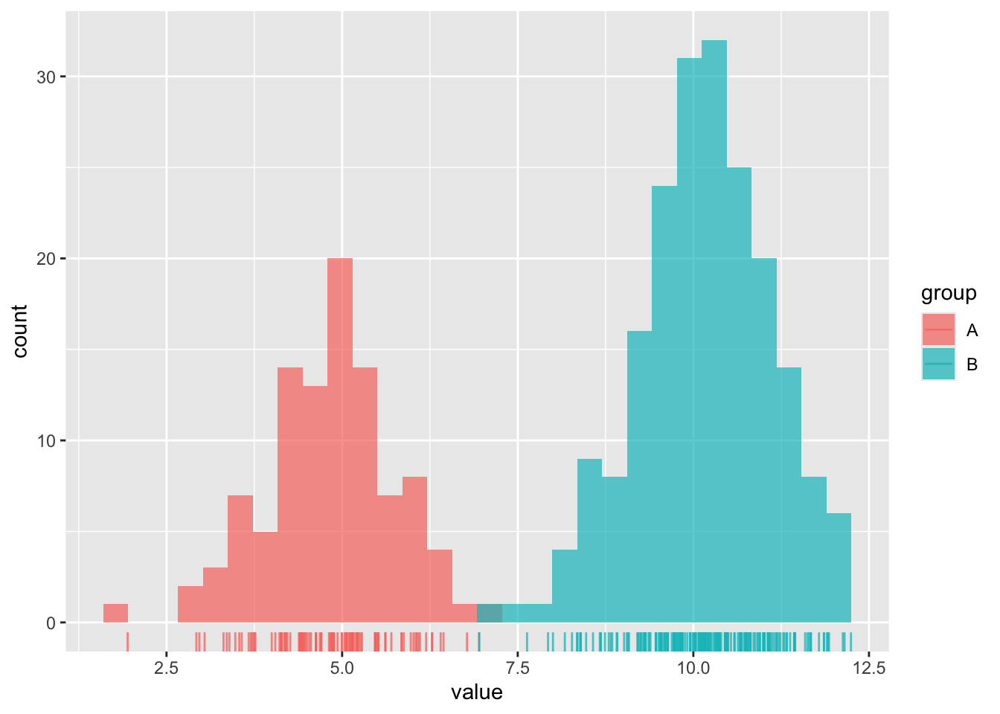
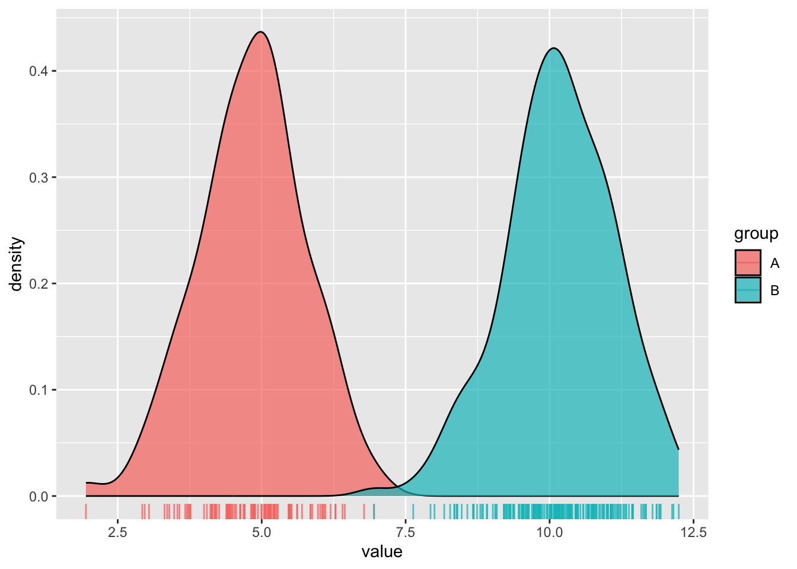
Combining geoms
Compare groups to a whole
library(palmerpenguins)
# use `after_stat(count)` to plot density of observations ----
ggplot(penguins, aes(x = body_mass_g, y = after_stat(count))) +
# plot full distribution curve with label "all penguins"; remove 'species' col so that this doesn't get faceted later on ----
geom_density(data = select(penguins, -species),
aes(fill = "all penguins"), color = "transparent") +
# plot second curve with label "species" ----
geom_density(aes(fill = "species"), color = "transparent") +
# facet wrap by species ----
facet_wrap(~species, nrow = 1) +
# update colors, x-axis label, legend position ----
scale_fill_manual(values = c("grey","#0C8346"), name = NULL) +
labs(x = "Body Mass (g)") +
theme(legend.position = "top")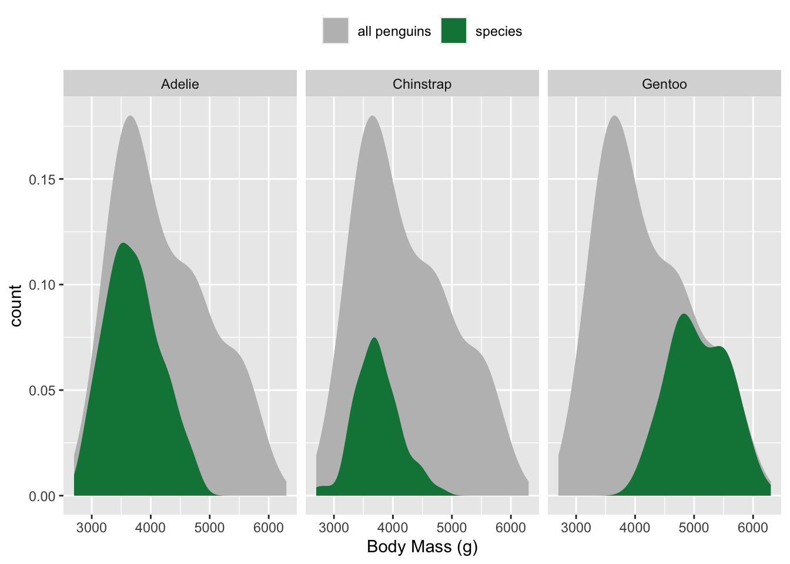
Ridgeline plots
- show distribution of a numeric variable for multiple groups
# basic ridgeline plot ----
ggplot(mko_clean, aes(x = Temp_bot, y = month_name)) +
ggridges::geom_density_ridges()
# fill with color gradient ----
ggplot(mko_clean, aes(x = Temp_bot, y = month_name, fill = after_stat(x))) +
ggridges::geom_density_ridges_gradient() +
scale_fill_gradientn(colors = c("#2C5374","#849BB4", "#D9E7EC", "#EF8080", "#8B3A3A"))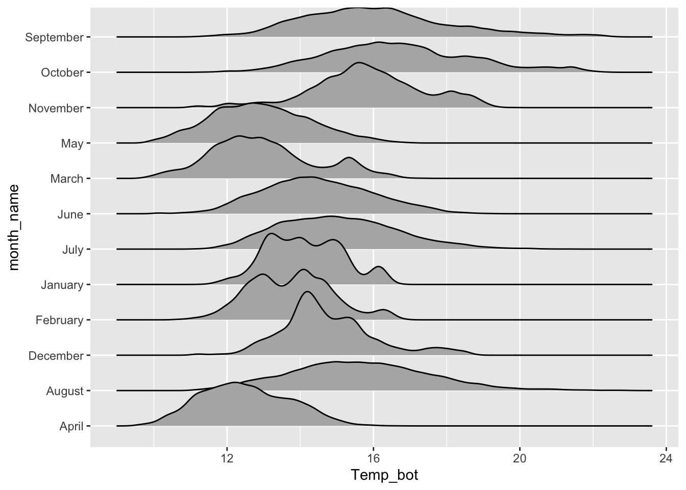
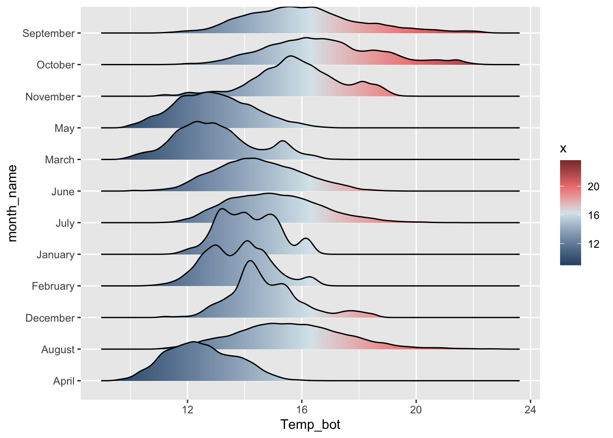
Alt 1: reorder groups + adjust overlap & tails
# ridgeline plot with reordered months ----
ggplot(mko_clean, aes(x = Temp_bot, y = month_name, fill = after_stat(x))) +
ggridges::geom_density_ridges_gradient(rel_min_height = 0.01, scale = 3) +
scale_y_discrete(limits = rev(month.name)) +
scale_fill_gradientn(colors = c("#2C5374","#849BB4", "#D9E7EC", "#EF8080", "#8B3A3A"))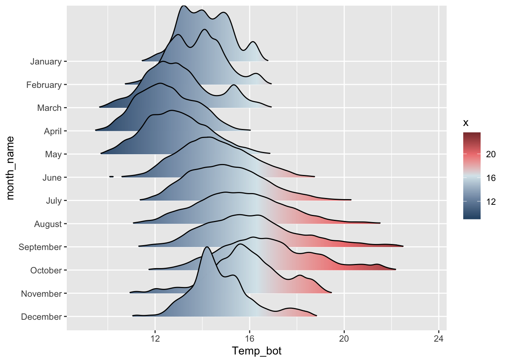
Alt 2: add quantiles
Alt 3: jitter raw data
# jittered points ----
ggplot(penguins, aes(x = body_mass_g, y = species)) +
ggridges::geom_density_ridges(jittered_points = TRUE,
alpha = 0.5, point_size = 0.5)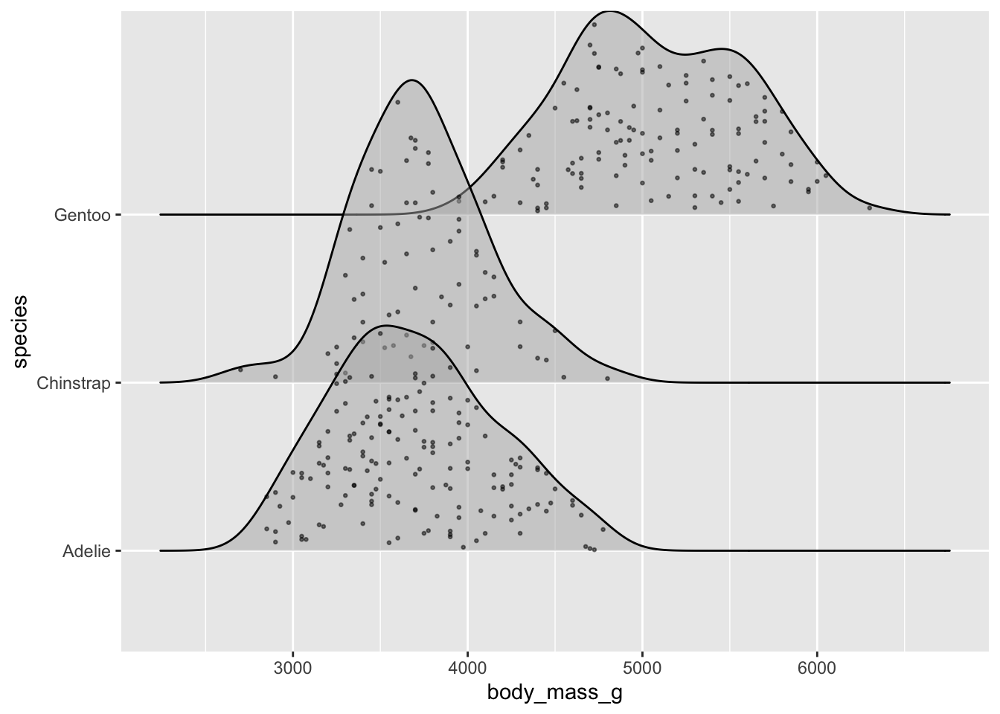
# raincloud ----
ggplot(penguins, aes(x = body_mass_g, y = species)) +
ggridges::geom_density_ridges(jittered_points = TRUE, alpha = 0.5,
point_size = 0.5, scale = 0.6,
position = "raincloud")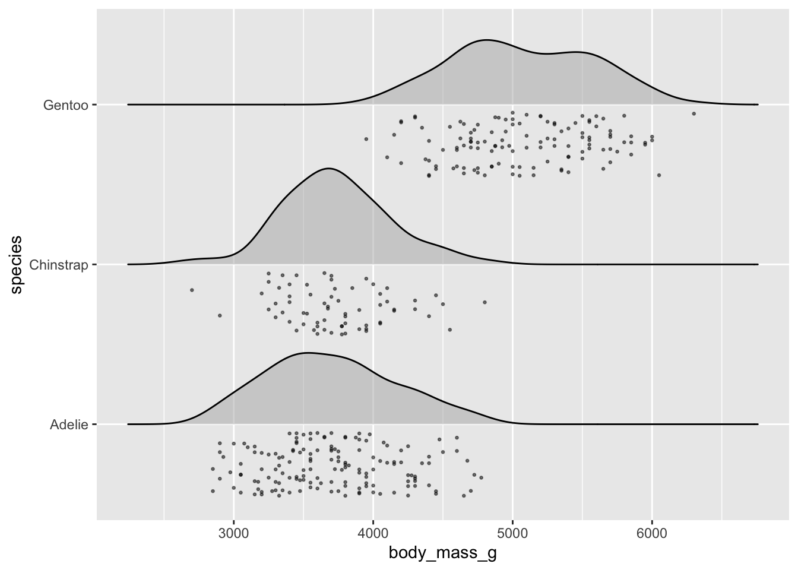
Boxplots
- summarize the distribution of a numeric variable for one or several groups
# boxplot with all 12 months ----
ggplot(mko_clean, aes(x = month_name, y = Temp_bot)) +
geom_boxplot() +
scale_x_discrete(limits = rev(month.name)) +
coord_flip()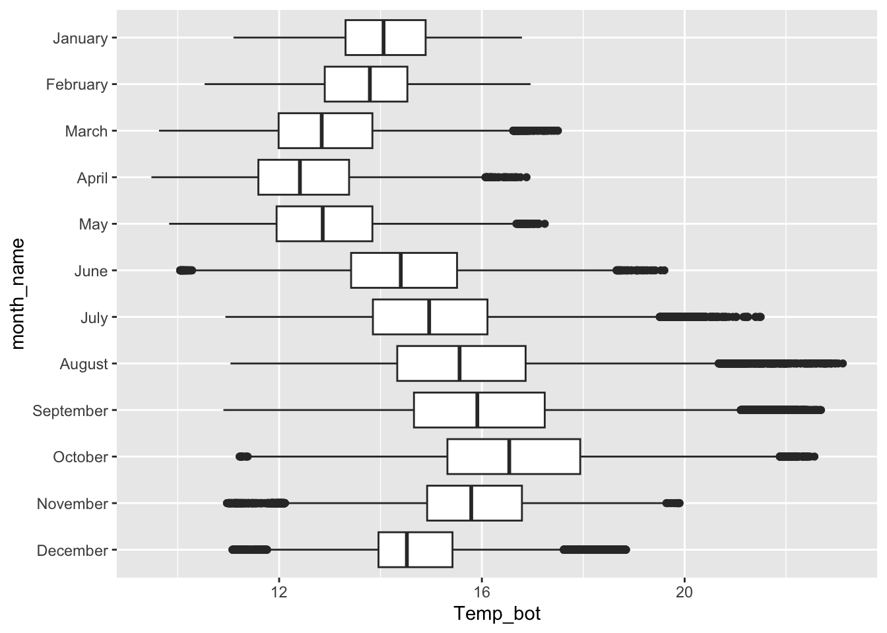
Alt 1: modify outliers
Alt 2: hightlight a group
Alt 3: jitter raw data (using {palmerpenguins} data)

Alt 4: dodged groups
Alt 5: overlay beeswarm
Violin plots:
- visualize distribution of a numeric variable for one or several groups; great for multiple groups with lots of data
# violin plot ----
ggplot(mko_clean, aes(x = month_name, y = Temp_bot)) +
geom_violin() +
scale_x_discrete(limits = rev(month.name)) +
coord_flip()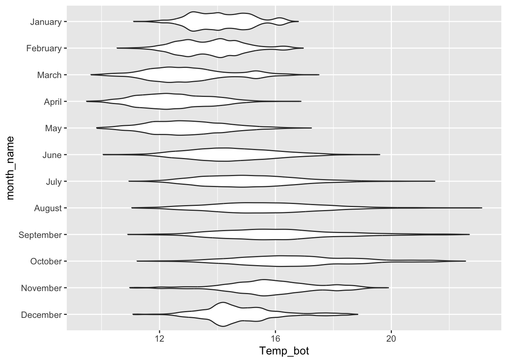